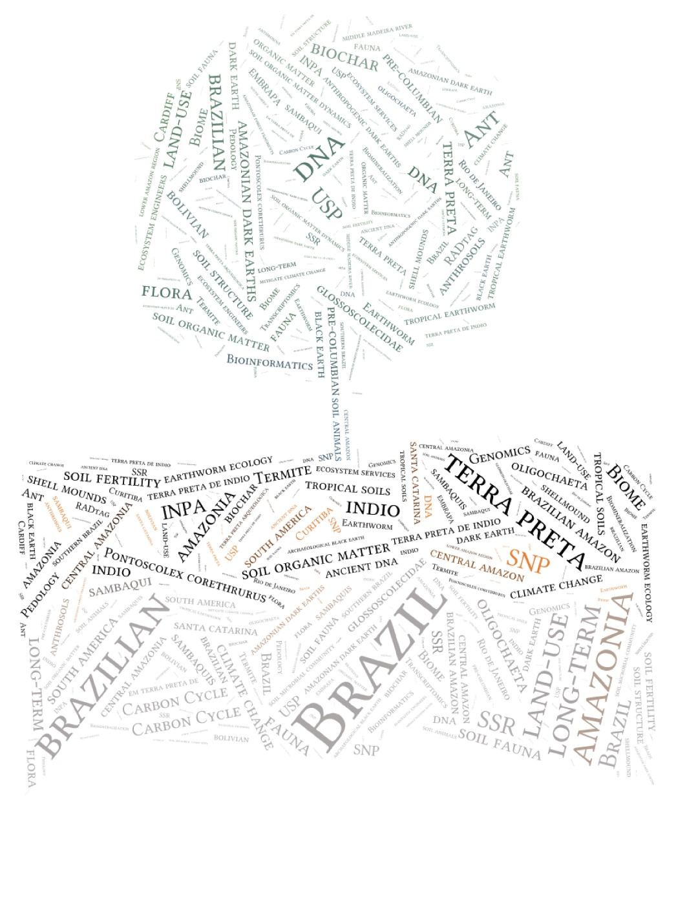
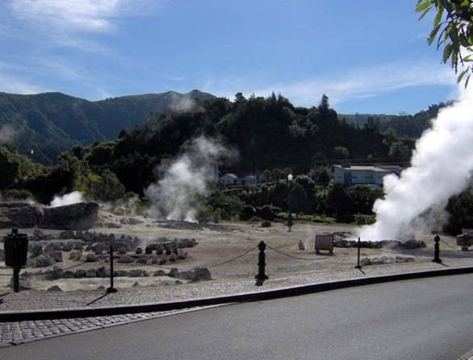
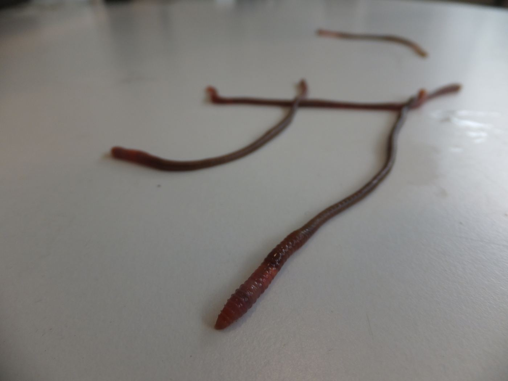
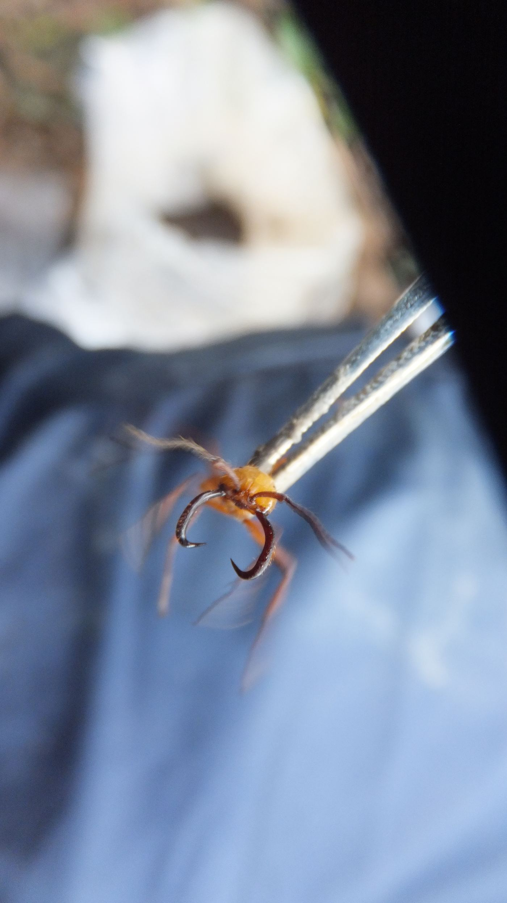
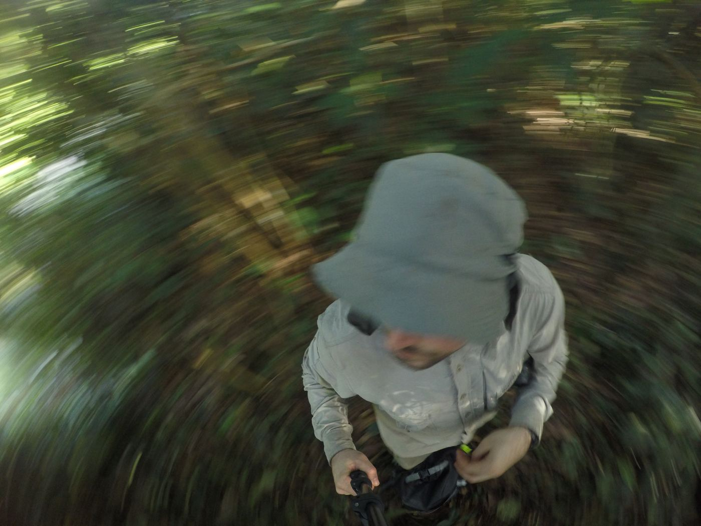
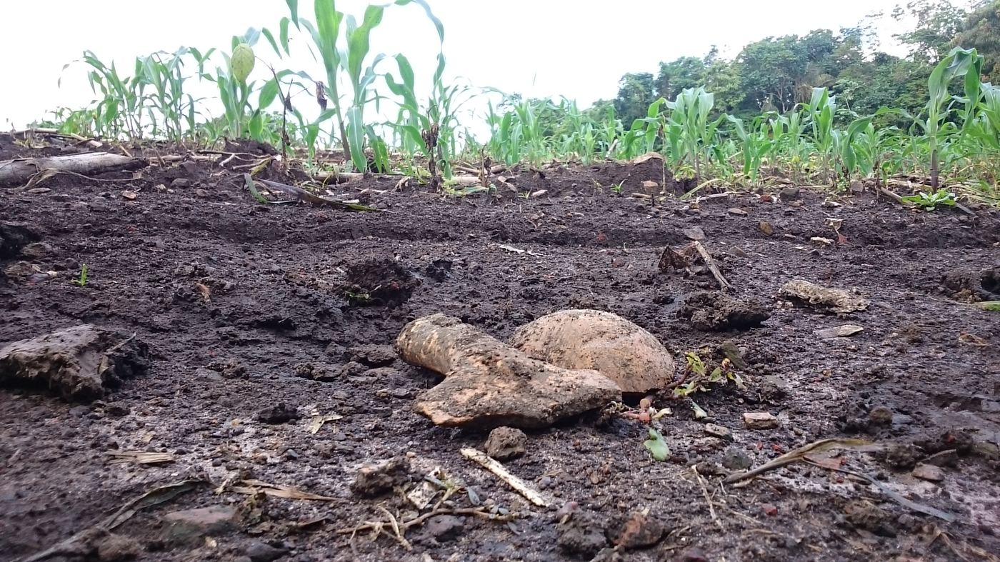
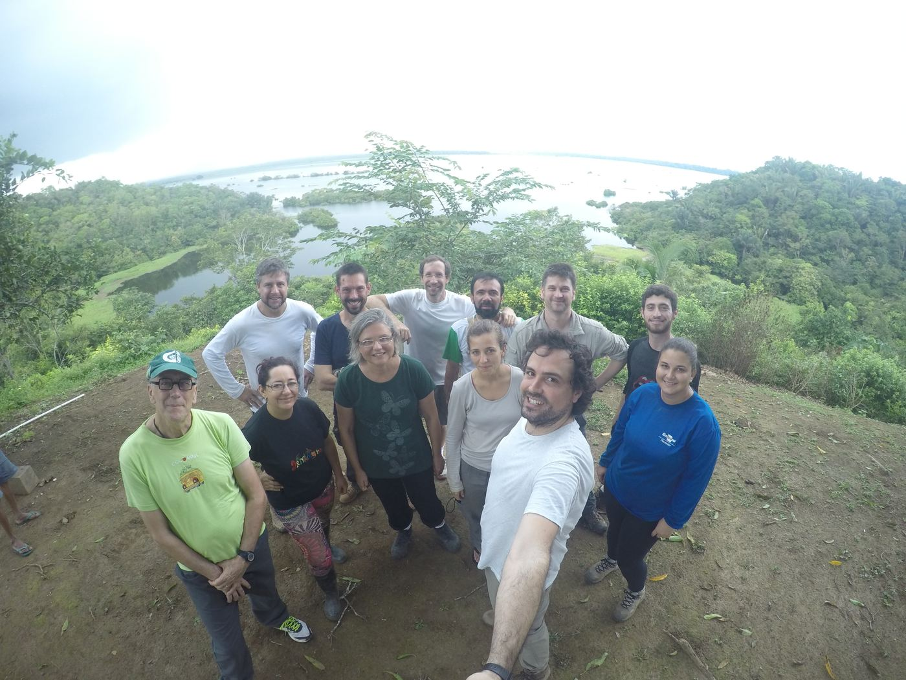

Research
Current Research Themes
Biodiversity Footprints in Anthropic/genic Ecosystems
One of our research themes focuses on the study of soil biodiversity signatures associated with ecosystems historically manipulated by humans — the so-called anthropic ecosystems, in particular the Amazonian Dark Earths (ADEs; see our network webpage). In this project we collaborate with Prof. George Brown at EMBRAPA-Forestry, Brazil, whose established network of interdisciplinary researchers — spanning anthropology, archaeology, geochemistry, radiocarbon dating and ecology — has provided an enormously rich knowledge base on ADEs.
Under this theme we have secured funding for several complementary projects, including “A Worm's Trail: Implementing a collaborative network for the study of Historical and Recent Land Use and Soil Management in Neotropical Rainforests” and “Tracking Historical and Recent Human Settlement, Land use & Migration in Neotropical Rainforests using Ecosystem Engineers” (Grant NE/M017656/1). These projects investigate the role of soil ecosystem engineers, organic matter and nutrients in ADE formation, use DNA barcoding to describe the associated ecosystem-engineer community, and apply genomics of a peregrine earthworm species to mirror historical human migration across the Amazon Basin.
Metazoans Living on a Volcanic Edge
Another sphere of our work covers animals living on, or close to, extreme geothermal environments. In 2013, Luis Cunha, Armindo Rodrigues and Prof. Peter Kille secured FCT funding to study earthworms as models in this conspicuous environment, later extended by a NERC grant — “Stress in a hot place: Characterising the ecogenomics of a pantropical sentinel inhabiting multi-stressor volcanic soils” (NE/I026022/1) — deriving a mechanistic understanding of how the invasive earthworm Amynthas gracilis adapts to cocktails of physico-chemical stressors in active volcanic soils, with applications in bioeconomy, medicine and environmental management.
Collaborations
Through his period at Cardiff University, Luis Cunha established collaborative links with Dr. Dave Spurgeon (Centre for Ecology & Hydrology), Prof. Mark Hodson (York University), and colleagues Profs Mike Bruford, Kille, Weightman and Dr. Pablo Orozco-terWengel. Longstanding international links include Prof. Rafael Montiel (LANGEBIO, Mexico) — together describing the genome of an entomopathogenic nematode — and Dr. Barois (INECOL, Mexico) on earthworm-associated microbiomes in geothermal fields. Current collaborations extend to Prof. Barbara Plytycz (Jagiellonian University, Poland) and Prof. Laszlo Molnar (University of Pecs, Hungary) on the evolution of the neural-immune axis in earthworm regeneration.
Research Grants
- 2018 — PI, FCT Scientific Employment Stimulus, “Dirty Footprints”: Soil Biodiversity Composition and Functions in Historical Anthropogenic Ecosystems (~€230,000)
- 2017 — Co-I, STFC Grant ST/P003281/1, integrating remote sensing and ground-based spectral analysis for biodiversity of archaeological sites in Amazonia (£30,986)
- 2016 — PI, PacBio SMRT crowdfunded grant, “Untangling the Volcanic Earthworm Genome” ($5,237)
- 2015 — Co-I, Beamtime grant SP11632 at Diamond Synchrotron (STFC), ligand-binding speciation in volcanic-soil earthworms (£120,000)
- 2015 — Marie Curie Global Fellowship H2020-MSCA-IF-2014, “HookaWorm” (£209,279)
- 2015 — Co-I, NERC-IOF Grant NE/M017656/1, tracking human settlement and migration via ecosystem engineers (£269,691)
- 2015 — Co-I, NERC-DIR Grant NE/M017656/1, “A Worm's Trail” collaborative network (£37,718)
- 2011 — Co-I, standard NERC Grant NE/I026022/1, ecogenomics of a volcanic-soil sentinel (£380,000)
- 2011 — Co-I, Portuguese Science Foundation Grant PTDC/AAC-AMB/115713/2009, phylogeography and ecotoxicogenomics in volcanic soil (€120,000)
- 2010 — PI, Regional Government of Azores Grant M3.2.4/I/003A/2010, scientific meeting “A volcanic furnace of Evolution” (€4,740)
In the field







